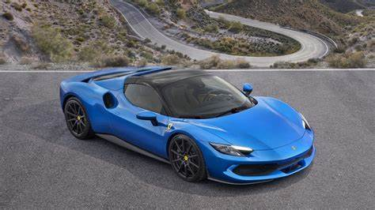

La Ferrari 296 GTS, evoluzione del concetto di berlinetta sportiva spider a 2 posti a motore centrale-posteriore Ferrari,
beneficia della nuova motorizzazione V6 a 120° accoppiata a un motore elettrico plug-in (PHEV), già vista sulla 296 GTB, in grado di erogare fino a 830 cv.
La vettura ridefinisce così l’idea di divertimento al volante per garantire emozioni pure non solo quando si è alla ricerca delle massime prestazioni,
ma anche nella guida di tutti i giorni
torna alla pagina principale